Ticker: BTC-USD · period=60d · interval=5m · generated_at=2026-03-09 04:46 UTC
mom_5m = close_5m[t] / close_5m[t-M] - 1
mom_15m = close_15m[T] / close_15m[T-N] - 1，其中 T 是 t 时刻之前最近一根已完成的 15m bar。
做多：mom_5m > th_5m 且 mom_15m > th_15m；做空同理取负阈值。策略规则为：空仓开仓、同向信号忽略、反向信号下一根 5m open 反手。
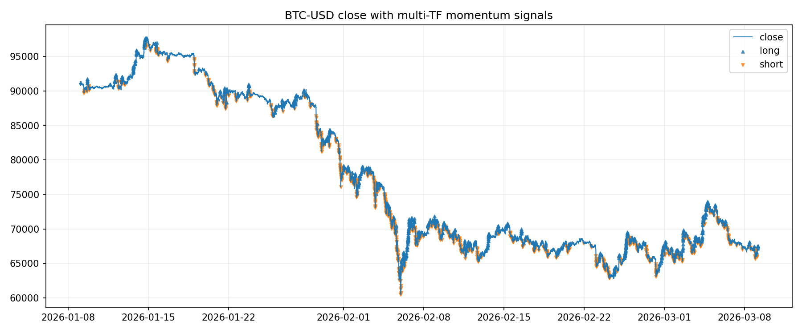
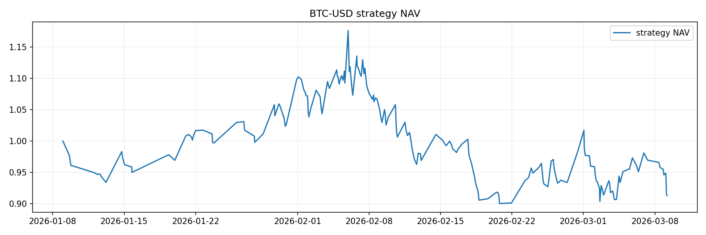
| variant | symbol | trades | win_rate | avg_ret | median_ret | total_return | max_drawdown | long_trades | short_trades | regime_window | trend_threshold | regime_score_threshold | filtered_signal_count | trend_window_1h | trend_threshold_1h | ema_window_1h | vol_window_1h | vol_quantile_window_1h | vol_quantile_max | min_pass_count |
|---|---|---|---|---|---|---|---|---|---|---|---|---|---|---|---|---|---|---|---|---|
| baseline | BTC-USD | 196 | 0.3163 | -0.0003 | -0.0057 | -0.0870 | -0.2343 | 98 | 98 | NaN | NaN | NaN | NaN | NaN | NaN | NaN | NaN | NaN | NaN | NaN |
| atr_filter | BTC-USD | 128 | 0.3438 | 0.0003 | -0.0047 | 0.0056 | -0.2575 | 64 | 64 | NaN | NaN | NaN | NaN | NaN | NaN | NaN | NaN | NaN | NaN | NaN |
| regime_filter_default | BTC-USD | 69 | 0.4348 | -0.0002 | -0.0078 | -0.0345 | -0.2145 | 35 | 34 | 36.0000 | 0.0150 | 2.0000 | 1284.0000 | NaN | NaN | NaN | NaN | NaN | NaN | NaN |
| risk_on_v1 | BTC-USD | 83 | 0.3133 | -0.0023 | -0.0058 | -0.1973 | -0.3440 | 42 | 41 | NaN | NaN | NaN | 1351.0000 | 12.0000 | 0.0050 | 24.0000 | 12.0000 | 72.0000 | 0.8000 | 2.0000 |
| regime_filter_best | BTC-USD | 39 | 0.5128 | 0.0061 | 0.0017 | 0.2455 | -0.1042 | 20 | 19 | 12.0000 | 0.0150 | 1.5000 | 1784.0000 | NaN | NaN | NaN | NaN | NaN | NaN | NaN |
过滤规则：使用 5m ATR(14) / close 作为波动尺度，若当前 ATR 比率高于最近 288 根中的 80% 分位阈值，则屏蔽该根的开仓信号。
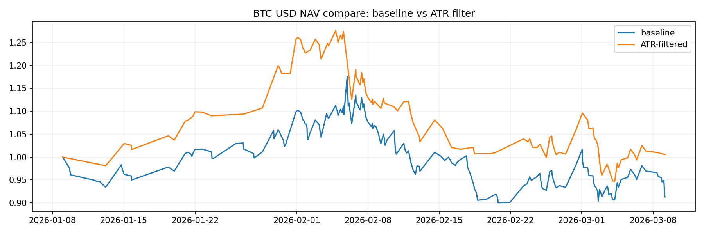
这版 gate 不预测涨跌方向，只判断当前环境是否适合让趋势信号上场。
ret = close.pct_change()trend_return = close / close.shift(N) - 1trend_strength = abs(trend_return)noise_level = rolling_std(ret, N)regime_score = trend_strength / noise_level默认值：N=36，trend_threshold=0.015，regime_score_threshold=2.0。
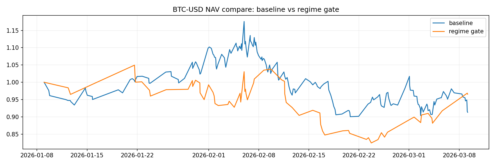
这是更高层的“是否开机”门控，不预测方向，只判断当前市场环境是否值得让策略出手。
trend_ok_1h: close / close.shift(12) - 1 > 0.005ema_ok_1h: close_1h > EMA(24)vol_ok_1h: rv_1h <= rolling_q80(rv_1h, 72)risk_on_pass = score >= 2直觉：趋势在、位置不差、风险不过热，这三件事至少满足 2 件，策略才开机。
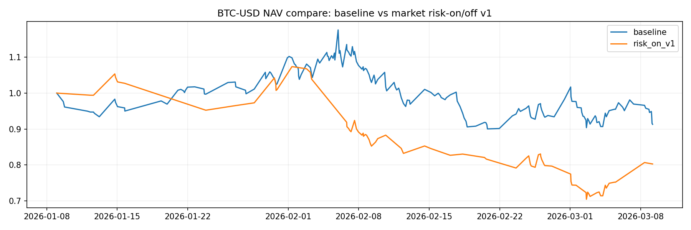
这里扫的是：regime_window ∈ [12, 24, 36]、trend_threshold ∈ [0.005, 0.01, 0.015]、regime_score_threshold ∈ [1.5, 2.0, 2.5]。
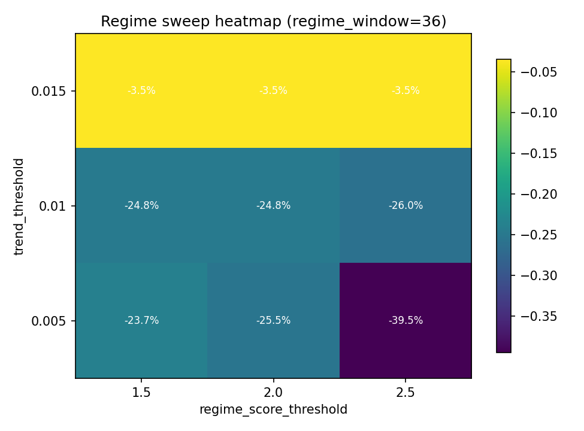
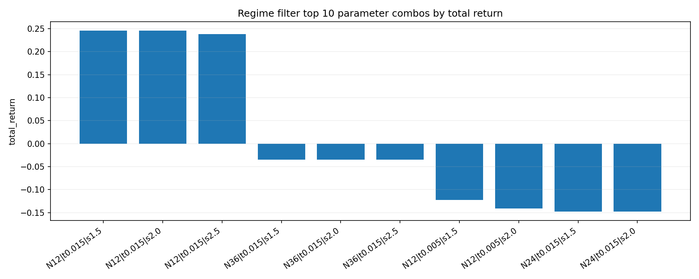
| variant | regime_window | trend_threshold | regime_score_threshold | signal_pass_count | filtered_signal_count | trades | win_rate | avg_ret | median_ret | total_return | max_drawdown | long_trades | short_trades |
|---|---|---|---|---|---|---|---|---|---|---|---|---|---|
| regime_filter | 12 | 0.0150 | 1.5000 | 566 | 1784 | 39 | 0.5128 | 0.0061 | 0.0017 | 0.2455 | -0.1042 | 20 | 19 |
| regime_filter | 12 | 0.0150 | 2.0000 | 564 | 1784 | 39 | 0.5128 | 0.0061 | 0.0017 | 0.2455 | -0.1042 | 20 | 19 |
| regime_filter | 12 | 0.0150 | 2.5000 | 561 | 1786 | 39 | 0.4872 | 0.0060 | -0.0014 | 0.2379 | -0.1042 | 20 | 19 |
| regime_filter | 36 | 0.0150 | 1.5000 | 2028 | 1284 | 69 | 0.4348 | -0.0002 | -0.0078 | -0.0345 | -0.2145 | 35 | 34 |
| regime_filter | 36 | 0.0150 | 2.0000 | 2028 | 1284 | 69 | 0.4348 | -0.0002 | -0.0078 | -0.0345 | -0.2145 | 35 | 34 |
| regime_filter | 36 | 0.0150 | 2.5000 | 2024 | 1285 | 69 | 0.4348 | -0.0002 | -0.0078 | -0.0345 | -0.2145 | 35 | 34 |
| regime_filter | 12 | 0.0050 | 1.5000 | 4295 | 410 | 166 | 0.3313 | -0.0006 | -0.0064 | -0.1222 | -0.2414 | 83 | 83 |
| regime_filter | 12 | 0.0050 | 2.0000 | 4156 | 441 | 164 | 0.3293 | -0.0007 | -0.0076 | -0.1408 | -0.2429 | 82 | 82 |
| regime_filter | 24 | 0.0150 | 1.5000 | 1289 | 1452 | 69 | 0.3478 | -0.0020 | -0.0093 | -0.1476 | -0.3141 | 35 | 34 |
| regime_filter | 24 | 0.0150 | 2.0000 | 1289 | 1452 | 69 | 0.3478 | -0.0020 | -0.0093 | -0.1476 | -0.3141 | 35 | 34 |
| regime_filter | 24 | 0.0150 | 2.5000 | 1283 | 1455 | 69 | 0.3478 | -0.0023 | -0.0110 | -0.1639 | -0.3272 | 35 | 34 |
| regime_filter | 12 | 0.0050 | 2.5000 | 3912 | 522 | 164 | 0.3354 | -0.0010 | -0.0076 | -0.1703 | -0.2495 | 82 | 82 |
| regime_filter | 12 | 0.0100 | 1.5000 | 1393 | 1297 | 104 | 0.2788 | -0.0022 | -0.0095 | -0.2260 | -0.3285 | 52 | 52 |
| regime_filter | 12 | 0.0100 | 2.0000 | 1383 | 1300 | 104 | 0.2788 | -0.0022 | -0.0095 | -0.2260 | -0.3285 | 52 | 52 |
| regime_filter | 24 | 0.0050 | 1.5000 | 6452 | 239 | 176 | 0.3239 | -0.0013 | -0.0081 | -0.2319 | -0.2829 | 88 | 88 |
| regime_filter | 36 | 0.0050 | 1.5000 | 7711 | 359 | 162 | 0.3086 | -0.0015 | -0.0080 | -0.2375 | -0.3564 | 81 | 81 |
| regime_filter | 12 | 0.0100 | 2.5000 | 1357 | 1314 | 104 | 0.2692 | -0.0023 | -0.0095 | -0.2394 | -0.3392 | 52 | 52 |
| regime_filter | 36 | 0.0100 | 1.5000 | 3737 | 837 | 110 | 0.3091 | -0.0023 | -0.0109 | -0.2482 | -0.3265 | 55 | 55 |
| regime_filter | 36 | 0.0100 | 2.0000 | 3732 | 840 | 110 | 0.3091 | -0.0023 | -0.0109 | -0.2482 | -0.3265 | 55 | 55 |
| regime_filter | 36 | 0.0050 | 2.0000 | 7623 | 383 | 162 | 0.3086 | -0.0016 | -0.0081 | -0.2549 | -0.3626 | 81 | 81 |
| regime_filter | 36 | 0.0100 | 2.5000 | 3717 | 849 | 110 | 0.3000 | -0.0025 | -0.0109 | -0.2604 | -0.3375 | 55 | 55 |
| regime_filter | 24 | 0.0050 | 2.0000 | 6333 | 263 | 174 | 0.3276 | -0.0019 | -0.0082 | -0.3038 | -0.3477 | 87 | 87 |
| regime_filter | 24 | 0.0050 | 2.5000 | 6106 | 313 | 174 | 0.3161 | -0.0025 | -0.0084 | -0.3695 | -0.4093 | 87 | 87 |
| regime_filter | 36 | 0.0050 | 2.5000 | 7440 | 421 | 162 | 0.2901 | -0.0029 | -0.0089 | -0.3946 | -0.4113 | 81 | 81 |
| regime_filter | 24 | 0.0100 | 1.5000 | 2785 | 821 | 132 | 0.2879 | -0.0037 | -0.0114 | -0.4083 | -0.4355 | 66 | 66 |
| regime_filter | 24 | 0.0100 | 2.0000 | 2776 | 824 | 132 | 0.2879 | -0.0040 | -0.0114 | -0.4318 | -0.4580 | 66 | 66 |
| regime_filter | 24 | 0.0100 | 2.5000 | 2757 | 829 | 132 | 0.2879 | -0.0042 | -0.0117 | -0.4427 | -0.4683 | 66 | 66 |
统一样本：Yahoo 60d 5m。资产：BTC-USD, ETH-USD, SPY, QQQ, 510300.SS。
| asset | sample | rows |
|---|---|---|
| BTC-USD | Yahoo 60d 5m | 17047 |
| ETH-USD | Yahoo 60d 5m | 17048 |
| SPY | Yahoo 60d 5m | 4520 |
| QQQ | Yahoo 60d 5m | 4520 |
| 510300.SS | Yahoo 60d 5m | 2840 |
| variant | assets_tested | positive_assets | mean_total_return | median_total_return | min_total_return | mean_max_drawdown | mean_trades | positive_asset_ratio |
|---|---|---|---|---|---|---|---|---|
| baseline | 5 | 0 | -0.1329 | -0.1078 | -0.2740 | -0.2153 | 112.2000 | 0.0000 |
| regime_default | 5 | 2 | -0.0146 | -0.0344 | -0.0626 | -0.1150 | 38.2000 | 0.4000 |
| risk_on_v1 | 5 | 0 | -0.0811 | -0.0701 | -0.1972 | -0.1701 | 44.8000 | 0.0000 |
| asset | sample | variant | trades | win_rate | total_return | max_drawdown | filtered_signal_count |
|---|---|---|---|---|---|---|---|
| BTC-USD | Yahoo 60d 5m | baseline | 196 | 0.3163 | -0.0868 | -0.2343 | 0 |
| BTC-USD | Yahoo 60d 5m | regime_default | 69 | 0.4348 | -0.0344 | -0.2145 | 1284 |
| BTC-USD | Yahoo 60d 5m | risk_on_v1 | 83 | 0.3133 | -0.1972 | -0.3440 | 1351 |
| ETH-USD | Yahoo 60d 5m | baseline | 267 | 0.3221 | -0.2740 | -0.4732 | 0 |
| ETH-USD | Yahoo 60d 5m | regime_default | 107 | 0.4206 | 0.0640 | -0.2374 | 1576 |
| ETH-USD | Yahoo 60d 5m | risk_on_v1 | 122 | 0.3197 | -0.1048 | -0.3369 | 1793 |
| SPY | Yahoo 60d 5m | baseline | 24 | 0.2917 | -0.0812 | -0.1036 | 0 |
| SPY | Yahoo 60d 5m | regime_default | 1 | 1.0000 | 0.0134 | 0.0000 | 145 |
| SPY | Yahoo 60d 5m | risk_on_v1 | 2 | 0.5000 | -0.0028 | -0.0129 | 131 |
| QQQ | Yahoo 60d 5m | baseline | 40 | 0.3250 | -0.1078 | -0.1234 | 0 |
| QQQ | Yahoo 60d 5m | regime_default | 6 | 0.3333 | -0.0535 | -0.0605 | 274 |
| QQQ | Yahoo 60d 5m | risk_on_v1 | 7 | 0.0000 | -0.0701 | -0.0701 | 260 |
| 510300.SS | Yahoo 60d 5m | baseline | 34 | 0.2353 | -0.1147 | -0.1422 | 0 |
| 510300.SS | Yahoo 60d 5m | regime_default | 8 | 0.2500 | -0.0626 | -0.0626 | 200 |
| 510300.SS | Yahoo 60d 5m | risk_on_v1 | 10 | 0.3000 | -0.0306 | -0.0868 | 152 |
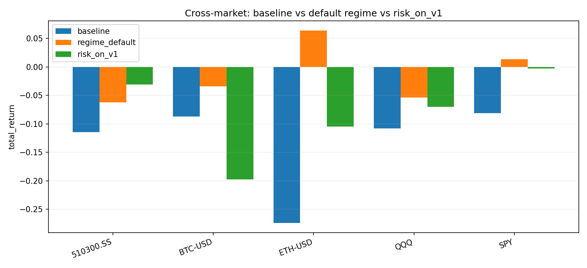
统一样本：Binance 180d 5m。资产：BTC-USD, ETH-USD。
| asset | sample | rows |
|---|---|---|
| BTC-USD | Binance 180d 5m | 51840 |
| ETH-USD | Binance 180d 5m | 51840 |
| variant | assets_tested | positive_assets | mean_total_return | median_total_return | min_total_return | mean_max_drawdown | mean_trades | positive_asset_ratio |
|---|---|---|---|---|---|---|---|---|
| baseline | 2 | 0 | -0.4233 | -0.4233 | -0.5516 | -0.4991 | 588.0000 | 0.0000 |
| regime_default | 2 | 0 | -0.1968 | -0.1968 | -0.2236 | -0.4579 | 209.0000 | 0.0000 |
| risk_on_v1 | 2 | 0 | -0.0661 | -0.0661 | -0.1284 | -0.3541 | 242.0000 | 0.0000 |
| asset | sample | variant | trades | win_rate | total_return | max_drawdown | filtered_signal_count |
|---|---|---|---|---|---|---|---|
| BTC-USD | Binance 180d 5m | baseline | 441 | 0.3401 | -0.2949 | -0.3779 | 0 |
| BTC-USD | Binance 180d 5m | regime_default | 145 | 0.4207 | -0.1699 | -0.3503 | 3048 |
| BTC-USD | Binance 180d 5m | risk_on_v1 | 167 | 0.3832 | -0.1284 | -0.3173 | 3044 |
| ETH-USD | Binance 180d 5m | baseline | 735 | 0.3238 | -0.5516 | -0.6203 | 0 |
| ETH-USD | Binance 180d 5m | regime_default | 273 | 0.3810 | -0.2236 | -0.5656 | 4603 |
| ETH-USD | Binance 180d 5m | risk_on_v1 | 317 | 0.3691 | -0.0038 | -0.3909 | 4928 |
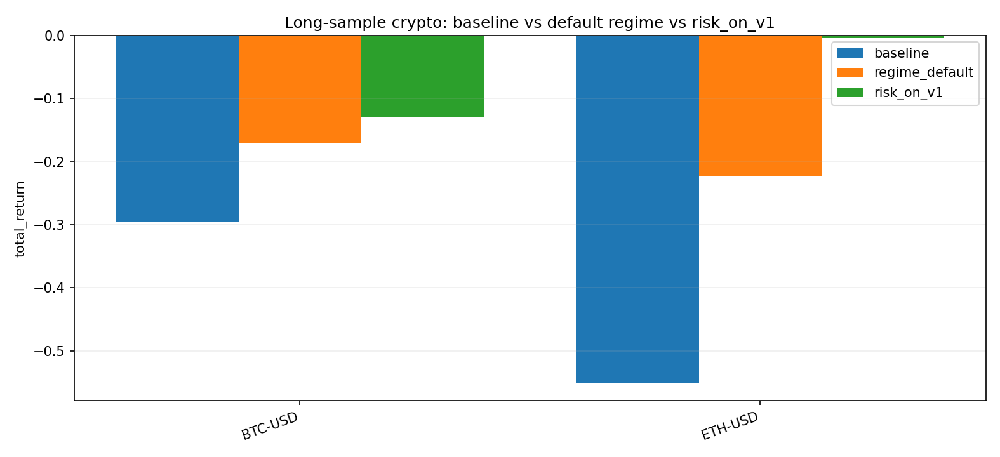
rolling 设置：window=20d，step=10d。crypto 用 Binance 180d 5m，股票/A股代理用 Yahoo 60d 5m。
| asset | sample | rows |
|---|---|---|
| BTC-USD | Binance 180d 5m | 51840 |
| ETH-USD | Binance 180d 5m | 51840 |
| SPY | Yahoo 60d 5m | 4520 |
| QQQ | Yahoo 60d 5m | 4520 |
| 510300.SS | Yahoo 60d 5m | 2840 |
| variant | assets_tested | windows_tested | positive_windows | mean_total_return | median_total_return | min_total_return | mean_max_drawdown | mean_trades | positive_window_ratio |
|---|---|---|---|---|---|---|---|---|---|
| baseline | 5 | 54 | 10 | -0.0455 | -0.0315 | -0.2459 | -0.1020 | 41.2037 | 0.1852 |
| regime_default | 5 | 54 | 15 | -0.0191 | -0.0148 | -0.3069 | -0.0799 | 14.2222 | 0.2778 |
| risk_on_v1 | 5 | 54 | 19 | -0.0095 | -0.0085 | -0.2004 | -0.0743 | 16.4259 | 0.3519 |
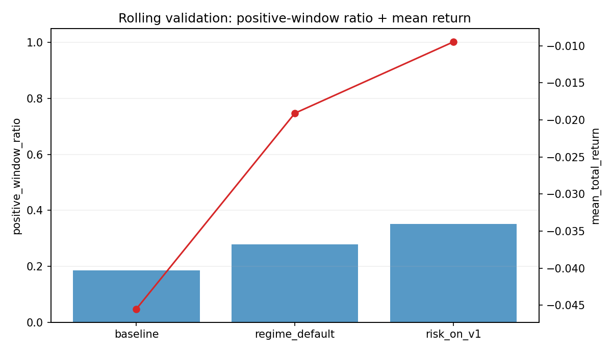
| asset | sample | variant | trades | win_rate | total_return | max_drawdown | filtered_signal_count | window_id | window_start | window_end | window_days |
|---|---|---|---|---|---|---|---|---|---|---|---|
| BTC-USD | Binance 180d 5m | baseline | 9 | 0.5556 | 0.0526 | -0.0440 | 0 | 1 | 2025-09-10 04:45:00+0000 | 2025-09-30 04:40:00+0000 | 20 |
| BTC-USD | Binance 180d 5m | regime_default | 5 | 0.6000 | -0.0345 | -0.0555 | 93 | 1 | 2025-09-10 04:45:00+0000 | 2025-09-30 04:40:00+0000 | 20 |
| BTC-USD | Binance 180d 5m | risk_on_v1 | 1 | 1.0000 | 0.0154 | 0.0000 | 54 | 1 | 2025-09-10 04:45:00+0000 | 2025-09-30 04:40:00+0000 | 20 |
| BTC-USD | Binance 180d 5m | baseline | 23 | 0.3478 | -0.0388 | -0.0676 | 0 | 2 | 2025-09-20 04:45:00+0000 | 2025-10-10 04:40:00+0000 | 20 |
| BTC-USD | Binance 180d 5m | regime_default | 5 | 0.4000 | 0.0632 | -0.0313 | 166 | 2 | 2025-09-20 04:45:00+0000 | 2025-10-10 04:40:00+0000 | 20 |
| BTC-USD | Binance 180d 5m | risk_on_v1 | 9 | 0.3333 | 0.0027 | -0.0431 | 110 | 2 | 2025-09-20 04:45:00+0000 | 2025-10-10 04:40:00+0000 | 20 |
| BTC-USD | Binance 180d 5m | baseline | 48 | 0.3125 | -0.0611 | -0.1040 | 0 | 3 | 2025-09-30 04:45:00+0000 | 2025-10-20 04:40:00+0000 | 20 |
| BTC-USD | Binance 180d 5m | regime_default | 9 | 0.5556 | 0.1268 | -0.0282 | 322 | 3 | 2025-09-30 04:45:00+0000 | 2025-10-20 04:40:00+0000 | 20 |
| BTC-USD | Binance 180d 5m | risk_on_v1 | 19 | 0.2632 | -0.2004 | -0.2166 | 318 | 3 | 2025-09-30 04:45:00+0000 | 2025-10-20 04:40:00+0000 | 20 |
| BTC-USD | Binance 180d 5m | baseline | 53 | 0.3396 | -0.0655 | -0.1206 | 0 | 4 | 2025-10-10 04:45:00+0000 | 2025-10-30 04:40:00+0000 | 20 |
| BTC-USD | Binance 180d 5m | regime_default | 11 | 0.7273 | 0.1276 | -0.0274 | 339 | 4 | 2025-10-10 04:45:00+0000 | 2025-10-30 04:40:00+0000 | 20 |
| BTC-USD | Binance 180d 5m | risk_on_v1 | 21 | 0.3333 | -0.0469 | -0.1183 | 368 | 4 | 2025-10-10 04:45:00+0000 | 2025-10-30 04:40:00+0000 | 20 |
| BTC-USD | Binance 180d 5m | baseline | 48 | 0.3125 | -0.0877 | -0.1455 | 0 | 5 | 2025-10-20 04:45:00+0000 | 2025-11-09 04:40:00+0000 | 20 |
| BTC-USD | Binance 180d 5m | regime_default | 12 | 0.4167 | 0.0440 | -0.0487 | 321 | 5 | 2025-10-20 04:45:00+0000 | 2025-11-09 04:40:00+0000 | 20 |
| BTC-USD | Binance 180d 5m | risk_on_v1 | 18 | 0.3889 | -0.0302 | -0.1063 | 312 | 5 | 2025-10-20 04:45:00+0000 | 2025-11-09 04:40:00+0000 | 20 |
| BTC-USD | Binance 180d 5m | baseline | 54 | 0.3519 | 0.0098 | -0.1108 | 0 | 6 | 2025-10-30 04:45:00+0000 | 2025-11-19 04:40:00+0000 | 20 |
| BTC-USD | Binance 180d 5m | regime_default | 18 | 0.3333 | -0.0263 | -0.0891 | 408 | 6 | 2025-10-30 04:45:00+0000 | 2025-11-19 04:40:00+0000 | 20 |
| BTC-USD | Binance 180d 5m | risk_on_v1 | 17 | 0.4118 | -0.0692 | -0.0888 | 485 | 6 | 2025-10-30 04:45:00+0000 | 2025-11-19 04:40:00+0000 | 20 |
| BTC-USD | Binance 180d 5m | baseline | 58 | 0.3966 | 0.1273 | -0.1182 | 0 | 7 | 2025-11-09 04:45:00+0000 | 2025-11-29 04:40:00+0000 | 20 |
| BTC-USD | Binance 180d 5m | regime_default | 24 | 0.4167 | -0.0906 | -0.1596 | 490 | 7 | 2025-11-09 04:45:00+0000 | 2025-11-29 04:40:00+0000 | 20 |
| BTC-USD | Binance 180d 5m | risk_on_v1 | 21 | 0.5238 | 0.1726 | -0.0616 | 577 | 7 | 2025-11-09 04:45:00+0000 | 2025-11-29 04:40:00+0000 | 20 |
| BTC-USD | Binance 180d 5m | baseline | 60 | 0.3833 | 0.0128 | -0.1182 | 0 | 8 | 2025-11-19 04:45:00+0000 | 2025-12-09 04:40:00+0000 | 20 |
| BTC-USD | Binance 180d 5m | regime_default | 20 | 0.3000 | -0.0093 | -0.1000 | 430 | 8 | 2025-11-19 04:45:00+0000 | 2025-12-09 04:40:00+0000 | 20 |
| BTC-USD | Binance 180d 5m | risk_on_v1 | 25 | 0.4800 | 0.0541 | -0.1025 | 380 | 8 | 2025-11-19 04:45:00+0000 | 2025-12-09 04:40:00+0000 | 20 |
| BTC-USD | Binance 180d 5m | baseline | 56 | 0.3750 | -0.0125 | -0.0726 | 0 | 9 | 2025-11-29 04:45:00+0000 | 2025-12-19 04:40:00+0000 | 20 |
| BTC-USD | Binance 180d 5m | regime_default | 20 | 0.3500 | -0.0670 | -0.1634 | 302 | 9 | 2025-11-29 04:45:00+0000 | 2025-12-19 04:40:00+0000 | 20 |
| BTC-USD | Binance 180d 5m | risk_on_v1 | 23 | 0.3043 | -0.1427 | -0.1427 | 290 | 9 | 2025-11-29 04:45:00+0000 | 2025-12-19 04:40:00+0000 | 20 |
| BTC-USD | Binance 180d 5m | baseline | 39 | 0.3333 | -0.0710 | -0.1219 | 0 | 10 | 2025-12-09 04:45:00+0000 | 2025-12-29 04:40:00+0000 | 20 |
| BTC-USD | Binance 180d 5m | regime_default | 15 | 0.3333 | -0.1492 | -0.1696 | 225 | 10 | 2025-12-09 04:45:00+0000 | 2025-12-29 04:40:00+0000 | 20 |
| BTC-USD | Binance 180d 5m | risk_on_v1 | 13 | 0.3846 | -0.0576 | -0.1006 | 195 | 10 | 2025-12-09 04:45:00+0000 | 2025-12-29 04:40:00+0000 | 20 |
| BTC-USD | Binance 180d 5m | baseline | 28 | 0.2857 | -0.1505 | -0.1659 | 0 | 11 | 2025-12-19 04:45:00+0000 | 2026-01-08 04:40:00+0000 | 20 |
| BTC-USD | Binance 180d 5m | regime_default | 8 | 0.1250 | -0.1248 | -0.1248 | 193 | 11 | 2025-12-19 04:45:00+0000 | 2026-01-08 04:40:00+0000 | 20 |
| BTC-USD | Binance 180d 5m | risk_on_v1 | 12 | 0.3333 | -0.0415 | -0.0707 | 118 | 11 | 2025-12-19 04:45:00+0000 | 2026-01-08 04:40:00+0000 | 20 |
| BTC-USD | Binance 180d 5m | baseline | 27 | 0.3333 | -0.0600 | -0.0786 | 0 | 12 | 2025-12-29 04:45:00+0000 | 2026-01-18 04:40:00+0000 | 20 |
| BTC-USD | Binance 180d 5m | regime_default | 6 | 0.3333 | -0.0446 | -0.0725 | 227 | 12 | 2025-12-29 04:45:00+0000 | 2026-01-18 04:40:00+0000 | 20 |
| BTC-USD | Binance 180d 5m | risk_on_v1 | 17 | 0.4118 | -0.0137 | -0.0581 | 123 | 12 | 2025-12-29 04:45:00+0000 | 2026-01-18 04:40:00+0000 | 20 |
| BTC-USD | Binance 180d 5m | baseline | 32 | 0.3438 | -0.0005 | -0.0519 | 0 | 13 | 2026-01-08 04:45:00+0000 | 2026-01-28 04:40:00+0000 | 20 |
| BTC-USD | Binance 180d 5m | regime_default | 11 | 0.4545 | -0.0256 | -0.0863 | 266 | 13 | 2026-01-08 04:45:00+0000 | 2026-01-28 04:40:00+0000 | 20 |
| BTC-USD | Binance 180d 5m | risk_on_v1 | 9 | 0.5556 | -0.0210 | -0.1089 | 210 | 13 | 2026-01-08 04:45:00+0000 | 2026-01-28 04:40:00+0000 | 20 |
| BTC-USD | Binance 180d 5m | baseline | 68 | 0.3529 | 0.1185 | -0.0729 | 0 | 14 | 2026-01-18 04:45:00+0000 | 2026-02-07 04:40:00+0000 | 20 |
| BTC-USD | Binance 180d 5m | regime_default | 34 | 0.4118 | -0.0228 | -0.1229 | 429 | 14 | 2026-01-18 04:45:00+0000 | 2026-02-07 04:40:00+0000 | 20 |
| BTC-USD | Binance 180d 5m | risk_on_v1 | 19 | 0.4737 | 0.3208 | -0.0444 | 665 | 14 | 2026-01-18 04:45:00+0000 | 2026-02-07 04:40:00+0000 | 20 |
| BTC-USD | Binance 180d 5m | baseline | 91 | 0.2857 | -0.0850 | -0.2038 | 0 | 15 | 2026-01-28 04:45:00+0000 | 2026-02-17 04:40:00+0000 | 20 |
| BTC-USD | Binance 180d 5m | regime_default | 37 | 0.4324 | -0.0664 | -0.1220 | 568 | 15 | 2026-01-28 04:45:00+0000 | 2026-02-17 04:40:00+0000 | 20 |
| BTC-USD | Binance 180d 5m | risk_on_v1 | 35 | 0.3429 | 0.1944 | -0.0825 | 738 | 15 | 2026-01-28 04:45:00+0000 | 2026-02-17 04:40:00+0000 | 20 |
| BTC-USD | Binance 180d 5m | baseline | 74 | 0.3108 | -0.2459 | -0.2599 | 0 | 16 | 2026-02-07 04:45:00+0000 | 2026-02-27 04:40:00+0000 | 20 |
| BTC-USD | Binance 180d 5m | regime_default | 20 | 0.5000 | -0.0227 | -0.1083 | 478 | 16 | 2026-02-07 04:45:00+0000 | 2026-02-27 04:40:00+0000 | 20 |
| BTC-USD | Binance 180d 5m | risk_on_v1 | 29 | 0.2759 | -0.1394 | -0.1602 | 428 | 16 | 2026-02-07 04:45:00+0000 | 2026-02-27 04:40:00+0000 | 20 |
| ETH-USD | Binance 180d 5m | baseline | 57 | 0.2632 | -0.0783 | -0.1665 | 0 | 1 | 2025-09-10 04:45:00+0000 | 2025-09-30 04:40:00+0000 | 20 |
| ETH-USD | Binance 180d 5m | regime_default | 11 | 0.5455 | 0.1453 | -0.0533 | 385 | 1 | 2025-09-10 04:45:00+0000 | 2025-09-30 04:40:00+0000 | 20 |
| ETH-USD | Binance 180d 5m | risk_on_v1 | 19 | 0.4737 | 0.0491 | -0.1056 | 315 | 1 | 2025-09-10 04:45:00+0000 | 2025-09-30 04:40:00+0000 | 20 |
| ETH-USD | Binance 180d 5m | baseline | 70 | 0.3000 | -0.1443 | -0.2226 | 0 | 2 | 2025-09-20 04:45:00+0000 | 2025-10-10 04:40:00+0000 | 20 |
| ETH-USD | Binance 180d 5m | regime_default | 13 | 0.4615 | 0.1428 | -0.0389 | 424 | 2 | 2025-09-20 04:45:00+0000 | 2025-10-10 04:40:00+0000 | 20 |
| ETH-USD | Binance 180d 5m | risk_on_v1 | 32 | 0.4062 | -0.1043 | -0.1404 | 362 | 2 | 2025-09-20 04:45:00+0000 | 2025-10-10 04:40:00+0000 | 20 |
| ETH-USD | Binance 180d 5m | baseline | 96 | 0.3333 | -0.1903 | -0.2068 | 0 | 3 | 2025-09-30 04:45:00+0000 | 2025-10-20 04:40:00+0000 | 20 |
| ETH-USD | Binance 180d 5m | regime_default | 28 | 0.5000 | 0.2096 | -0.0683 | 544 | 3 | 2025-09-30 04:45:00+0000 | 2025-10-20 04:40:00+0000 | 20 |
| ETH-USD | Binance 180d 5m | risk_on_v1 | 61 | 0.3115 | -0.1612 | -0.2041 | 532 | 3 | 2025-09-30 04:45:00+0000 | 2025-10-20 04:40:00+0000 | 20 |
| ETH-USD | Binance 180d 5m | baseline | 99 | 0.3333 | -0.1342 | -0.2329 | 0 | 4 | 2025-10-10 04:45:00+0000 | 2025-10-30 04:40:00+0000 | 20 |
| ETH-USD | Binance 180d 5m | regime_default | 41 | 0.3902 | -0.0306 | -0.1912 | 574 | 4 | 2025-10-10 04:45:00+0000 | 2025-10-30 04:40:00+0000 | 20 |
| ETH-USD | Binance 180d 5m | risk_on_v1 | 51 | 0.3137 | -0.1394 | -0.2248 | 658 | 4 | 2025-10-10 04:45:00+0000 | 2025-10-30 04:40:00+0000 | 20 |
| ETH-USD | Binance 180d 5m | baseline | 94 | 0.2979 | -0.0654 | -0.1677 | 0 | 5 | 2025-10-20 04:45:00+0000 | 2025-11-09 04:40:00+0000 | 20 |
| ETH-USD | Binance 180d 5m | regime_default | 35 | 0.4000 | -0.0293 | -0.1223 | 574 | 5 | 2025-10-20 04:45:00+0000 | 2025-11-09 04:40:00+0000 | 20 |
| ETH-USD | Binance 180d 5m | risk_on_v1 | 30 | 0.3000 | -0.1720 | -0.2338 | 734 | 5 | 2025-10-20 04:45:00+0000 | 2025-11-09 04:40:00+0000 | 20 |
| ETH-USD | Binance 180d 5m | baseline | 112 | 0.3304 | -0.0775 | -0.1498 | 0 | 6 | 2025-10-30 04:45:00+0000 | 2025-11-19 04:40:00+0000 | 20 |
| ETH-USD | Binance 180d 5m | regime_default | 43 | 0.4186 | -0.0860 | -0.1909 | 630 | 6 | 2025-10-30 04:45:00+0000 | 2025-11-19 04:40:00+0000 | 20 |
| ETH-USD | Binance 180d 5m | risk_on_v1 | 45 | 0.3778 | -0.1446 | -0.2326 | 848 | 6 | 2025-10-30 04:45:00+0000 | 2025-11-19 04:40:00+0000 | 20 |
| ETH-USD | Binance 180d 5m | baseline | 111 | 0.3604 | -0.1262 | -0.2449 | 0 | 7 | 2025-11-09 04:45:00+0000 | 2025-11-29 04:40:00+0000 | 20 |
| ETH-USD | Binance 180d 5m | regime_default | 52 | 0.3077 | -0.3069 | -0.3556 | 680 | 7 | 2025-11-09 04:45:00+0000 | 2025-11-29 04:40:00+0000 | 20 |
| ETH-USD | Binance 180d 5m | risk_on_v1 | 47 | 0.4255 | 0.1308 | -0.0798 | 792 | 7 | 2025-11-09 04:45:00+0000 | 2025-11-29 04:40:00+0000 | 20 |
| ETH-USD | Binance 180d 5m | baseline | 92 | 0.3261 | -0.1207 | -0.2929 | 0 | 8 | 2025-11-19 04:45:00+0000 | 2025-12-09 04:40:00+0000 | 20 |
| ETH-USD | Binance 180d 5m | regime_default | 37 | 0.2973 | -0.1242 | -0.2539 | 614 | 8 | 2025-11-19 04:45:00+0000 | 2025-12-09 04:40:00+0000 | 20 |
| ETH-USD | Binance 180d 5m | risk_on_v1 | 50 | 0.3600 | -0.0562 | -0.1549 | 519 | 8 | 2025-11-19 04:45:00+0000 | 2025-12-09 04:40:00+0000 | 20 |
| ETH-USD | Binance 180d 5m | baseline | 76 | 0.3158 | -0.0165 | -0.1365 | 0 | 9 | 2025-11-29 04:45:00+0000 | 2025-12-19 04:40:00+0000 | 20 |
| ETH-USD | Binance 180d 5m | regime_default | 24 | 0.4583 | 0.1345 | -0.0759 | 452 | 9 | 2025-11-29 04:45:00+0000 | 2025-12-19 04:40:00+0000 | 20 |
| ETH-USD | Binance 180d 5m | risk_on_v1 | 31 | 0.2581 | -0.1728 | -0.1728 | 457 | 9 | 2025-11-29 04:45:00+0000 | 2025-12-19 04:40:00+0000 | 20 |
| ETH-USD | Binance 180d 5m | baseline | 54 | 0.3148 | -0.0210 | -0.1430 | 0 | 10 | 2025-12-09 04:45:00+0000 | 2025-12-29 04:40:00+0000 | 20 |
| ETH-USD | Binance 180d 5m | regime_default | 21 | 0.3810 | -0.0695 | -0.1587 | 324 | 10 | 2025-12-09 04:45:00+0000 | 2025-12-29 04:40:00+0000 | 20 |
| ETH-USD | Binance 180d 5m | risk_on_v1 | 19 | 0.4211 | -0.0259 | -0.1583 | 360 | 10 | 2025-12-09 04:45:00+0000 | 2025-12-29 04:40:00+0000 | 20 |
| ETH-USD | Binance 180d 5m | baseline | 42 | 0.3810 | -0.1189 | -0.1189 | 0 | 11 | 2025-12-19 04:45:00+0000 | 2026-01-08 04:40:00+0000 | 20 |
| ETH-USD | Binance 180d 5m | regime_default | 14 | 0.2143 | -0.1049 | -0.1214 | 295 | 11 | 2025-12-19 04:45:00+0000 | 2026-01-08 04:40:00+0000 | 20 |
| ETH-USD | Binance 180d 5m | risk_on_v1 | 26 | 0.5385 | 0.0391 | -0.0551 | 187 | 11 | 2025-12-19 04:45:00+0000 | 2026-01-08 04:40:00+0000 | 20 |
| ETH-USD | Binance 180d 5m | baseline | 46 | 0.3913 | -0.1107 | -0.1436 | 0 | 12 | 2025-12-29 04:45:00+0000 | 2026-01-18 04:40:00+0000 | 20 |
| ETH-USD | Binance 180d 5m | regime_default | 13 | 0.2308 | -0.0668 | -0.1365 | 351 | 12 | 2025-12-29 04:45:00+0000 | 2026-01-18 04:40:00+0000 | 20 |
| ETH-USD | Binance 180d 5m | risk_on_v1 | 27 | 0.4074 | 0.0067 | -0.0551 | 206 | 12 | 2025-12-29 04:45:00+0000 | 2026-01-18 04:40:00+0000 | 20 |
| ETH-USD | Binance 180d 5m | baseline | 52 | 0.3462 | 0.0291 | -0.0824 | 0 | 13 | 2026-01-08 04:45:00+0000 | 2026-01-28 04:40:00+0000 | 20 |
| ETH-USD | Binance 180d 5m | regime_default | 15 | 0.3333 | 0.0346 | -0.0856 | 379 | 13 | 2026-01-08 04:45:00+0000 | 2026-01-28 04:40:00+0000 | 20 |
| ETH-USD | Binance 180d 5m | risk_on_v1 | 23 | 0.3043 | -0.1082 | -0.1238 | 344 | 13 | 2026-01-08 04:45:00+0000 | 2026-01-28 04:40:00+0000 | 20 |
| ETH-USD | Binance 180d 5m | baseline | 99 | 0.3131 | 0.0063 | -0.1728 | 0 | 14 | 2026-01-18 04:45:00+0000 | 2026-02-07 04:40:00+0000 | 20 |
| ETH-USD | Binance 180d 5m | regime_default | 46 | 0.3261 | -0.0895 | -0.2324 | 563 | 14 | 2026-01-18 04:45:00+0000 | 2026-02-07 04:40:00+0000 | 20 |
| ETH-USD | Binance 180d 5m | risk_on_v1 | 29 | 0.3103 | 0.2291 | -0.1173 | 899 | 14 | 2026-01-18 04:45:00+0000 | 2026-02-07 04:40:00+0000 | 20 |
| ETH-USD | Binance 180d 5m | baseline | 121 | 0.2810 | -0.1533 | -0.2141 | 0 | 15 | 2026-01-28 04:45:00+0000 | 2026-02-17 04:40:00+0000 | 20 |
| ETH-USD | Binance 180d 5m | regime_default | 60 | 0.3500 | -0.2514 | -0.2782 | 701 | 15 | 2026-01-28 04:45:00+0000 | 2026-02-17 04:40:00+0000 | 20 |
| ETH-USD | Binance 180d 5m | risk_on_v1 | 38 | 0.3158 | 0.3103 | -0.0884 | 1009 | 15 | 2026-01-28 04:45:00+0000 | 2026-02-17 04:40:00+0000 | 20 |
| ETH-USD | Binance 180d 5m | baseline | 88 | 0.3295 | -0.0702 | -0.2064 | 0 | 16 | 2026-02-07 04:45:00+0000 | 2026-02-27 04:40:00+0000 | 20 |
| ETH-USD | Binance 180d 5m | regime_default | 38 | 0.3684 | -0.1250 | -0.2201 | 632 | 16 | 2026-02-07 04:45:00+0000 | 2026-02-27 04:40:00+0000 | 20 |
| ETH-USD | Binance 180d 5m | risk_on_v1 | 35 | 0.3714 | -0.0344 | -0.1107 | 618 | 16 | 2026-02-07 04:45:00+0000 | 2026-02-27 04:40:00+0000 | 20 |
| SPY | Yahoo 60d 5m | baseline | 4 | 0.2500 | -0.0263 | -0.0263 | 0 | 1 | 2025-12-09 14:30:00+0000 | 2025-12-26 20:55:00+0000 | 20 |
| SPY | Yahoo 60d 5m | regime_default | 0 | NaN | 0.0000 | 0.0000 | 23 | 1 | 2025-12-09 14:30:00+0000 | 2025-12-26 20:55:00+0000 | 20 |
| SPY | Yahoo 60d 5m | risk_on_v1 | 1 | 1.0000 | 0.0017 | 0.0000 | 16 | 1 | 2025-12-09 14:30:00+0000 | 2025-12-26 20:55:00+0000 | 20 |
| SPY | Yahoo 60d 5m | baseline | 0 | NaN | 0.0000 | 0.0000 | 0 | 2 | 2025-12-19 14:30:00+0000 | 2026-01-07 20:55:00+0000 | 20 |
| SPY | Yahoo 60d 5m | regime_default | 0 | NaN | 0.0000 | 0.0000 | 0 | 2 | 2025-12-19 14:30:00+0000 | 2026-01-07 20:55:00+0000 | 20 |
| SPY | Yahoo 60d 5m | risk_on_v1 | 0 | NaN | 0.0000 | 0.0000 | 0 | 2 | 2025-12-19 14:30:00+0000 | 2026-01-07 20:55:00+0000 | 20 |
| SPY | Yahoo 60d 5m | baseline | 2 | 0.0000 | -0.0149 | -0.0149 | 0 | 3 | 2025-12-29 14:30:00+0000 | 2026-01-16 20:55:00+0000 | 20 |
| SPY | Yahoo 60d 5m | regime_default | 0 | NaN | 0.0000 | 0.0000 | 10 | 3 | 2025-12-29 14:30:00+0000 | 2026-01-16 20:55:00+0000 | 20 |
| SPY | Yahoo 60d 5m | risk_on_v1 | 0 | NaN | 0.0000 | 0.0000 | 10 | 3 | 2025-12-29 14:30:00+0000 | 2026-01-16 20:55:00+0000 | 20 |
| SPY | Yahoo 60d 5m | baseline | 6 | 0.1667 | -0.0304 | -0.0433 | 0 | 4 | 2026-01-08 14:30:00+0000 | 2026-01-27 20:55:00+0000 | 20 |
| SPY | Yahoo 60d 5m | regime_default | 1 | 0.0000 | -0.0202 | -0.0202 | 25 | 4 | 2026-01-08 14:30:00+0000 | 2026-01-27 20:55:00+0000 | 20 |
| SPY | Yahoo 60d 5m | risk_on_v1 | 1 | 1.0000 | 0.0135 | 0.0000 | 22 | 4 | 2026-01-08 14:30:00+0000 | 2026-01-27 20:55:00+0000 | 20 |
| SPY | Yahoo 60d 5m | baseline | 11 | 0.2727 | -0.0370 | -0.0453 | 0 | 5 | 2026-01-20 14:30:00+0000 | 2026-02-06 20:55:00+0000 | 20 |
| SPY | Yahoo 60d 5m | regime_default | 0 | NaN | 0.0000 | 0.0000 | 58 | 5 | 2026-01-20 14:30:00+0000 | 2026-02-06 20:55:00+0000 | 20 |
| SPY | Yahoo 60d 5m | risk_on_v1 | 1 | 1.0000 | 0.0110 | 0.0000 | 47 | 5 | 2026-01-20 14:30:00+0000 | 2026-02-06 20:55:00+0000 | 20 |
| SPY | Yahoo 60d 5m | baseline | 9 | 0.3333 | -0.0229 | -0.0360 | 0 | 6 | 2026-01-28 14:30:00+0000 | 2026-02-13 20:55:00+0000 | 20 |
| SPY | Yahoo 60d 5m | regime_default | 0 | NaN | 0.0000 | 0.0000 | 57 | 6 | 2026-01-28 14:30:00+0000 | 2026-02-13 20:55:00+0000 | 20 |
| SPY | Yahoo 60d 5m | risk_on_v1 | 0 | NaN | 0.0000 | 0.0000 | 57 | 6 | 2026-01-28 14:30:00+0000 | 2026-02-13 20:55:00+0000 | 20 |
| SPY | Yahoo 60d 5m | baseline | 5 | 0.0000 | -0.0220 | -0.0220 | 0 | 7 | 2026-02-09 14:30:00+0000 | 2026-02-26 20:55:00+0000 | 20 |
| SPY | Yahoo 60d 5m | regime_default | 0 | NaN | 0.0000 | 0.0000 | 34 | 7 | 2026-02-09 14:30:00+0000 | 2026-02-26 20:55:00+0000 | 20 |
| SPY | Yahoo 60d 5m | risk_on_v1 | 1 | 0.0000 | -0.0006 | -0.0006 | 28 | 7 | 2026-02-09 14:30:00+0000 | 2026-02-26 20:55:00+0000 | 20 |
| QQQ | Yahoo 60d 5m | baseline | 3 | 0.6667 | 0.0233 | -0.0147 | 0 | 1 | 2025-12-09 14:30:00+0000 | 2025-12-26 20:55:00+0000 | 20 |
| QQQ | Yahoo 60d 5m | regime_default | 2 | 1.0000 | 0.0216 | 0.0000 | 40 | 1 | 2025-12-09 14:30:00+0000 | 2025-12-26 20:55:00+0000 | 20 |
| QQQ | Yahoo 60d 5m | risk_on_v1 | 1 | 0.0000 | -0.0087 | -0.0087 | 34 | 1 | 2025-12-09 14:30:00+0000 | 2025-12-26 20:55:00+0000 | 20 |
| QQQ | Yahoo 60d 5m | baseline | 4 | 0.2500 | -0.0221 | -0.0305 | 0 | 2 | 2025-12-19 14:30:00+0000 | 2026-01-07 20:55:00+0000 | 20 |
| QQQ | Yahoo 60d 5m | regime_default | 0 | NaN | 0.0000 | 0.0000 | 21 | 2 | 2025-12-19 14:30:00+0000 | 2026-01-07 20:55:00+0000 | 20 |
| QQQ | Yahoo 60d 5m | risk_on_v1 | 0 | NaN | 0.0000 | 0.0000 | 21 | 2 | 2025-12-19 14:30:00+0000 | 2026-01-07 20:55:00+0000 | 20 |
| QQQ | Yahoo 60d 5m | baseline | 7 | 0.1429 | -0.0566 | -0.0566 | 0 | 3 | 2025-12-29 14:30:00+0000 | 2026-01-16 20:55:00+0000 | 20 |
| QQQ | Yahoo 60d 5m | regime_default | 2 | 0.0000 | -0.0265 | -0.0265 | 41 | 3 | 2025-12-29 14:30:00+0000 | 2026-01-16 20:55:00+0000 | 20 |
| QQQ | Yahoo 60d 5m | risk_on_v1 | 1 | 0.0000 | -0.0023 | -0.0023 | 31 | 3 | 2025-12-29 14:30:00+0000 | 2026-01-16 20:55:00+0000 | 20 |
| QQQ | Yahoo 60d 5m | baseline | 7 | 0.1429 | -0.0326 | -0.0545 | 0 | 4 | 2026-01-08 14:30:00+0000 | 2026-01-27 20:55:00+0000 | 20 |
| QQQ | Yahoo 60d 5m | regime_default | 3 | 0.0000 | -0.0709 | -0.0709 | 47 | 4 | 2026-01-08 14:30:00+0000 | 2026-01-27 20:55:00+0000 | 20 |
| QQQ | Yahoo 60d 5m | risk_on_v1 | 1 | 1.0000 | 0.0085 | 0.0000 | 40 | 4 | 2026-01-08 14:30:00+0000 | 2026-01-27 20:55:00+0000 | 20 |
| QQQ | Yahoo 60d 5m | baseline | 13 | 0.3846 | -0.0260 | -0.0454 | 0 | 5 | 2026-01-20 14:30:00+0000 | 2026-02-06 20:55:00+0000 | 20 |
| QQQ | Yahoo 60d 5m | regime_default | 1 | 1.0000 | 0.0203 | 0.0000 | 97 | 5 | 2026-01-20 14:30:00+0000 | 2026-02-06 20:55:00+0000 | 20 |
| QQQ | Yahoo 60d 5m | risk_on_v1 | 1 | 0.0000 | -0.0059 | -0.0059 | 89 | 5 | 2026-01-20 14:30:00+0000 | 2026-02-06 20:55:00+0000 | 20 |
| QQQ | Yahoo 60d 5m | baseline | 11 | 0.4545 | -0.0215 | -0.0454 | 0 | 6 | 2026-01-28 14:30:00+0000 | 2026-02-13 20:55:00+0000 | 20 |
| QQQ | Yahoo 60d 5m | regime_default | 1 | 1.0000 | 0.0336 | 0.0000 | 74 | 6 | 2026-01-28 14:30:00+0000 | 2026-02-13 20:55:00+0000 | 20 |
| QQQ | Yahoo 60d 5m | risk_on_v1 | 1 | 0.0000 | -0.0208 | -0.0208 | 100 | 6 | 2026-01-28 14:30:00+0000 | 2026-02-13 20:55:00+0000 | 20 |
| QQQ | Yahoo 60d 5m | baseline | 10 | 0.4000 | -0.0066 | -0.0267 | 0 | 7 | 2026-02-09 14:30:00+0000 | 2026-02-26 20:55:00+0000 | 20 |
| QQQ | Yahoo 60d 5m | regime_default | 1 | 0.0000 | -0.0084 | -0.0084 | 64 | 7 | 2026-02-09 14:30:00+0000 | 2026-02-26 20:55:00+0000 | 20 |
| QQQ | Yahoo 60d 5m | risk_on_v1 | 5 | 0.0000 | -0.0300 | -0.0300 | 42 | 7 | 2026-02-09 14:30:00+0000 | 2026-02-26 20:55:00+0000 | 20 |
| 510300.SS | Yahoo 60d 5m | baseline | 5 | 0.2000 | -0.0096 | -0.0216 | 0 | 1 | 2025-12-04 01:30:00+0000 | 2025-12-23 06:55:00+0000 | 20 |
| 510300.SS | Yahoo 60d 5m | regime_default | 3 | 0.3333 | -0.0350 | -0.0430 | 33 | 1 | 2025-12-04 01:30:00+0000 | 2025-12-23 06:55:00+0000 | 20 |
| 510300.SS | Yahoo 60d 5m | risk_on_v1 | 1 | 1.0000 | 0.0084 | 0.0000 | 23 | 1 | 2025-12-04 01:30:00+0000 | 2025-12-23 06:55:00+0000 | 20 |
| 510300.SS | Yahoo 60d 5m | baseline | 2 | 0.5000 | 0.0140 | -0.0010 | 0 | 2 | 2025-12-15 01:30:00+0000 | 2025-12-31 06:55:00+0000 | 20 |
| 510300.SS | Yahoo 60d 5m | regime_default | 2 | 0.5000 | -0.0066 | -0.0176 | 17 | 2 | 2025-12-15 01:30:00+0000 | 2025-12-31 06:55:00+0000 | 20 |
| 510300.SS | Yahoo 60d 5m | risk_on_v1 | 1 | 1.0000 | 0.0150 | 0.0000 | 9 | 2 | 2025-12-15 01:30:00+0000 | 2025-12-31 06:55:00+0000 | 20 |
| 510300.SS | Yahoo 60d 5m | baseline | 3 | 0.6667 | 0.0267 | -0.0018 | 0 | 3 | 2025-12-24 01:30:00+0000 | 2026-01-12 06:55:00+0000 | 20 |
| 510300.SS | Yahoo 60d 5m | regime_default | 1 | 1.0000 | 0.0166 | 0.0000 | 23 | 3 | 2025-12-24 01:30:00+0000 | 2026-01-12 06:55:00+0000 | 20 |
| 510300.SS | Yahoo 60d 5m | risk_on_v1 | 3 | 0.6667 | 0.0267 | -0.0018 | 0 | 3 | 2025-12-24 01:30:00+0000 | 2026-01-12 06:55:00+0000 | 20 |
| 510300.SS | Yahoo 60d 5m | baseline | 12 | 0.0833 | -0.0692 | -0.0692 | 0 | 4 | 2026-01-05 01:30:00+0000 | 2026-01-22 06:55:00+0000 | 20 |
| 510300.SS | Yahoo 60d 5m | regime_default | 2 | 0.5000 | -0.0346 | -0.0350 | 46 | 4 | 2026-01-05 01:30:00+0000 | 2026-01-22 06:55:00+0000 | 20 |
| 510300.SS | Yahoo 60d 5m | risk_on_v1 | 5 | 0.0000 | -0.0596 | -0.0596 | 35 | 4 | 2026-01-05 01:30:00+0000 | 2026-01-22 06:55:00+0000 | 20 |
| 510300.SS | Yahoo 60d 5m | baseline | 14 | 0.0714 | -0.1019 | -0.1019 | 0 | 5 | 2026-01-13 01:30:00+0000 | 2026-01-30 06:55:00+0000 | 20 |
| 510300.SS | Yahoo 60d 5m | regime_default | 1 | 1.0000 | 0.0039 | 0.0000 | 58 | 5 | 2026-01-13 01:30:00+0000 | 2026-01-30 06:55:00+0000 | 20 |
| 510300.SS | Yahoo 60d 5m | risk_on_v1 | 3 | 0.0000 | -0.0743 | -0.0743 | 53 | 5 | 2026-01-13 01:30:00+0000 | 2026-01-30 06:55:00+0000 | 20 |
| 510300.SS | Yahoo 60d 5m | baseline | 9 | 0.2222 | -0.0529 | -0.0596 | 0 | 6 | 2026-01-23 01:30:00+0000 | 2026-02-11 06:55:00+0000 | 20 |
| 510300.SS | Yahoo 60d 5m | regime_default | 2 | 0.5000 | 0.0144 | -0.0012 | 62 | 6 | 2026-01-23 01:30:00+0000 | 2026-02-11 06:55:00+0000 | 20 |
| 510300.SS | Yahoo 60d 5m | risk_on_v1 | 2 | 0.0000 | -0.0214 | -0.0214 | 48 | 6 | 2026-01-23 01:30:00+0000 | 2026-02-11 06:55:00+0000 | 20 |
| 510300.SS | Yahoo 60d 5m | baseline | 4 | 0.7500 | -0.0008 | -0.0072 | 0 | 7 | 2026-02-03 01:30:00+0000 | 2026-02-13 06:55:00+0000 | 20 |
| 510300.SS | Yahoo 60d 5m | regime_default | 0 | NaN | 0.0000 | 0.0000 | 30 | 7 | 2026-02-03 01:30:00+0000 | 2026-02-13 06:55:00+0000 | 20 |
| 510300.SS | Yahoo 60d 5m | risk_on_v1 | 3 | 0.3333 | -0.0093 | -0.0105 | 11 | 7 | 2026-02-03 01:30:00+0000 | 2026-02-13 06:55:00+0000 | 20 |
| 510300.SS | Yahoo 60d 5m | baseline | 7 | 0.4286 | -0.0180 | -0.0235 | 0 | 8 | 2026-02-12 01:30:00+0000 | 2026-03-03 06:55:00+0000 | 20 |
| 510300.SS | Yahoo 60d 5m | regime_default | 0 | NaN | 0.0000 | 0.0000 | 37 | 8 | 2026-02-12 01:30:00+0000 | 2026-03-03 06:55:00+0000 | 20 |
| 510300.SS | Yahoo 60d 5m | risk_on_v1 | 4 | 0.5000 | -0.0083 | -0.0116 | 23 | 8 | 2026-02-12 01:30:00+0000 | 2026-03-03 06:55:00+0000 | 20 |
| fee_bps_per_side | slippage_bps_per_side | trades | total_return | max_drawdown |
|---|---|---|---|---|
| 0 | 2.0000 | 196 | 0.0681 | -0.1915 |
| 1 | 2.0000 | 196 | 0.0270 | -0.2024 |
| 2 | 2.0000 | 196 | -0.0125 | -0.2132 |
| 4 | 2.0000 | 196 | -0.0870 | -0.2343 |
| 6 | 2.0000 | 196 | -0.1559 | -0.2626 |
| 10 | 2.0000 | 196 | -0.2785 | -0.3350 |
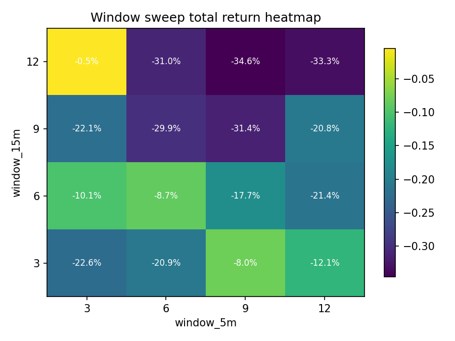
| window_5m | window_15m | trades | total_return | max_drawdown |
|---|---|---|---|---|
| 3 | 3 | 182 | -0.2257 | -0.3358 |
| 3 | 6 | 170 | -0.1008 | -0.2759 |
| 3 | 9 | 152 | -0.2208 | -0.3110 |
| 3 | 12 | 120 | -0.0047 | -0.1685 |
| 6 | 3 | 220 | -0.2094 | -0.2975 |
| 6 | 6 | 196 | -0.0870 | -0.2343 |
| 6 | 9 | 176 | -0.2988 | -0.3387 |
| 6 | 12 | 156 | -0.3099 | -0.3244 |
| 9 | 3 | 232 | -0.0799 | -0.2337 |
| 9 | 6 | 212 | -0.1767 | -0.2475 |
| 9 | 9 | 190 | -0.3143 | -0.3861 |
| 9 | 12 | 168 | -0.3456 | -0.3539 |
| 12 | 3 | 224 | -0.1206 | -0.2462 |
| 12 | 6 | 224 | -0.2140 | -0.2961 |
| 12 | 9 | 184 | -0.2081 | -0.2989 |
| 12 | 12 | 170 | -0.3331 | -0.3423 |
当前最佳窗口（按 total_return 粗排）：5m=3, 15m=12, total_return=-0.47%, max_dd=-16.85%
结论：当前 evidence 偏弱，更多像基线原型而不是可直接实盘
动作：先把它当成可解释基线，不急着和更复杂模型混在一起。
结论：成本较敏感，短周期策略需要严肃对待手续费和滑点
动作：下一步优先做 fee/slippage 情景测试，再叠加波动、量价或 regime 过滤。
结论：参数稳定性偏弱，存在只在局部参数表现好的风险
动作：如果只有孤立参数赚钱，要谨慎；如果一片参数都还能活，才更像真信号。
结论：当前 ATR 过滤有帮助，至少在这个样本里改善了收益/回撤之一
动作：把 ATR 过滤当作可调模块继续验证；如果 A/B 已变好，就继续扫阈值和窗口。
结论：默认 regime gate（N=36, trend>0.015, score>2.0）把策略从 -8.70% 调整到 -3.45%，说明过滤器本身是有效的；但它还不足以把一个偏弱 baseline 直接抬成稳健策略。
动作：先把默认值当成 first baseline；不要只因为它改善一点点就急着宣布“市场状态过滤搞定了”。
结论：当前样本里最优 regime 组合是 N=12, trend_threshold=0.015, score_threshold=1.5；但真正更重要的是，看默认值附近是否也还行。当前有 6 组参数至少优于 baseline。
动作：如果默认值附近一整片都不差，说明默认值不是拍脑袋；如果只有单点好看，就先别深挖。
结论：先把 regime gate 定位成‘弱有效环境过滤模块’：它负责减少坏环境里的低质量交易，不负责单独拯救一个本身就偏弱的 baseline。下一步该补的是更强的 risk-on/risk-off 定义，而不是继续在同一组参数上反复微调。
动作：优先做 cross-market / longer-sample 验证，确认它到底是“真环境过滤”还是“样本内小修补”。
结论：跨市场统一样本下，default regime gate 在 2/5 个资产上为正，而 baseline 只有 0/5 个。
动作：如果 default 只在 crypto 有效，就把它定义成 crypto regime gate，而不是通用全市场 gate。
结论：更长样本里（crypto 180d 5m），default regime gate 的平均收益是 -19.68%，baseline 是 -42.33%。
动作：若更长样本也优于 baseline，再继续做 OOS / rolling；若长样本失效，就降级为样本内技巧。
结论：rolling 下，default regime gate 在 15/54 个窗口为正，positive_window_ratio=0.28；baseline 只有 0.19。 这说明它跨阶段有改善，但还没达到‘大多数阶段都有效’的稳健线。
动作：如果 positive_window_ratio 只是略高于 baseline，但仍低于 0.5，就把它视为“有改善但仍偏阶段性”；只有明显超过 0.5，才更像跨阶段稳健。
结论：risk-on/off v1 用 3 个最小特征：1h 趋势为正、1h 价格站上 EMA、1h 波动未进入极端高风险区；满足至少 2/3 才开机。 单市场里它把 baseline 从 -8.70% 调整到 -19.73%。
动作：把它理解成“开机条件检查表”，而不是新方向预测器。它属于环境门控层，介于底层信号和真正执行之间。
结论：如果看 rolling，risk-on/off v1 的 positive_window_ratio=0.35，default regime 是 0.28，baseline 是 0.19；这能告诉我们更高层 market gate 是否真的比局部 trend/choppy gate 更稳。
动作：如果 rolling / cross-market 明显优于 default regime，就继续沿这条线扩展；如果没有，就说明简单 market gate 还不够，需要更强的 risk proxy 或跨资产状态特征。